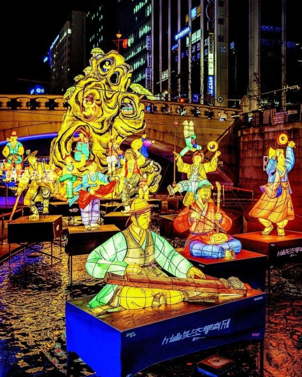
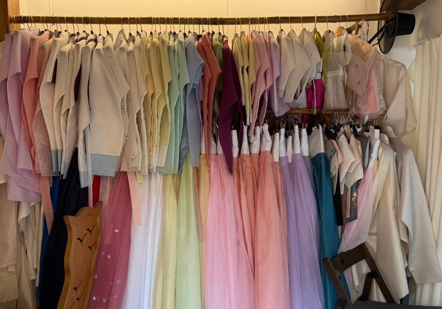
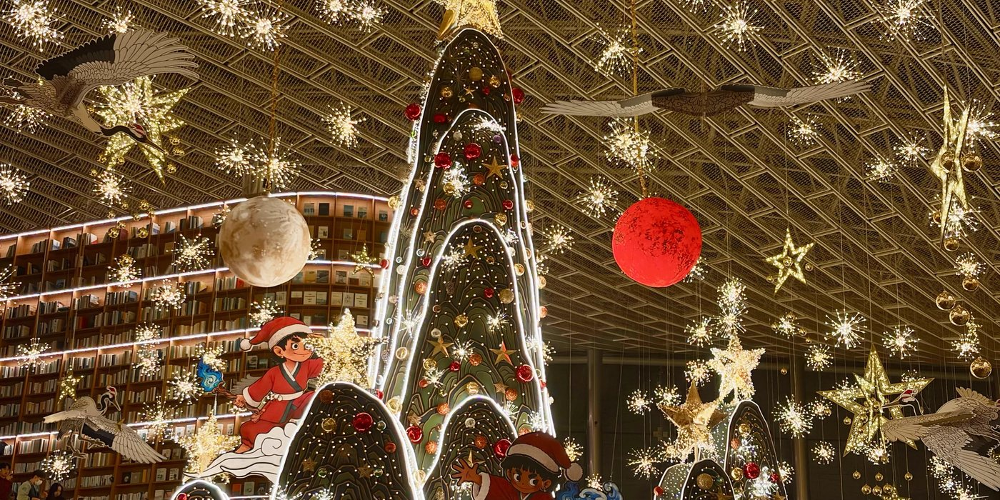

Please enter the password shared with you to continue.
That password does not match. Please try again.
Your Seoul Guide · Family of Four
Everything You Need, Day by Day
Where to meet, where to eat, and how to be warm and at ease in Seoul in late December.
18 to 23 December 2026Park Hyatt SeoulTwo Adults, Two Children
Before You Go
Tips for the Journey
Tap each to open.
Before You FlyThree Apps to DownloadDownload these at home, where the connection is easiest.
Papago
To translate
Korea's own translation app, and more natural with Korean than most. Point the camera at a menu or a sign to read it in English, or speak into it in conversation.
Google Maps gives only limited directions in Korea, so Naver Map is the one locals use. Set the language to English in the settings. Every restaurant link in this guide opens in it.
"My daughter has a nut allergy." Show it when ordering. Pine nuts are jat (잣) in Korean.
What to PackDressing for Seoul in Late DecemberDry, bright and properly cold, with a wind that makes it feel colder still.
0 to 4°CDaytime, 32 to 39°F
−3 to −7°CNight, 19 to 27°F
About 17:15Sunset
A long padded coat
Knee length if you have one, with a hood. It is what most of Seoul wears in winter, and it keeps the wind off your legs on the walk between doors.
A thin warm base layer
Thermal tops and leggings for everyone. Shops in Myeongdong sell them, should you need more on the first day.
Layers that come off easily
Indoors is warmly heated, the museum, the malls and the restaurants. A light knit under the coat is easier than one thick jumper.
Hat, earmuffs, scarf, gloves
The wind finds ears and hands first. Gloves that work with a phone screen are useful for maps and photographs.
Warm shoes with good grip
Waterproof boots or trainers with a firm sole, and wool socks. Paths can be icy in the shade, and the palace grounds are gravel.
Small comforts
Hand warmers, hot packs (핫팩), are sold in every convenience store. The air is dry, so lip balm and a rich moisturiser are worth the space.
Friday 18 December · Arrival
Landing at Incheon
Your driverIn the arrivals hall, holding a card with your name
FlightAir Canada AC63, landing 17:10
ThenTo Park Hyatt Seoul, a little under an hour
Arrivals Hall
Once through immigration and baggage, look for your driver in the arrivals hall. He will be waiting before you land, so there is no need to message on landing unless something changes.
Settling In
The evening is left open. Should you wish for a restaurant near the hotel, or something quiet sent up to the room, message Soo Hyun, your local concierge, on WhatsApp and it will be arranged.
Saturday 19 December · Day One
Namsan and Myeongdong
Your driver is with you for the whole day.
Your driverPark Hyatt main entrance. Time confirmed the evening before
Through the dayOn call throughout Myeongdong, so a warm car is never far
TicketsNamsan Tower tickets for four, held for you
Up to Namsan Tower
Your driver brings you up the mountain road, close to the tower, at about half past ten, once the morning has warmed a little.
Lunch · Bibimbap
목멱산방
Mokmyeoksanbang목멱산방
A Michelin Guide recommended bibimbap house at the foot of Namsan, in a quiet hanok style room.
Known for
Yukhoe bibimbap (seasoned raw beef), the Sanbang bibimbap, bulgogi bibimbap, and a cheese kimchi pancake for the table
Good to know
Ordering is at a kiosk by the door. Saturdays can bring a short queue, so we aim to arrive just before the lunch rush.
Myeongdong is a few minutes down the hill. Your daughter's eye examination and frame fitting are at Davich Optical, Myeongdong (다비치안경 명동점), part of Korea's largest eyewear chain, so the choice of frames is wide, and English is spoken.
One request before you fly: please send us your daughter's current prescription. How quickly lenses can be made depends on it, so we will check in advance whether hers can be ready the same day or need a little more time.
Late Afternoon · Animal Cafe
루프캣미 고양이카페 명동점
Roof Cat Me, Myeongdong루프캣미 고양이카페 명동점
A calm cat cafe close to the Myeongdong shopping streets, with drinks included in the entry.
Known for
An unhurried hour with the cats, and a warm drink
Hours
12:00 to 22:00. Children under 12 enter with a parent.
If you would like, after dinner: the Seoul Lantern Festival (서울빛초롱축제) along the Cheonggyecheon stream, from 11 December to 31 January, lit each evening from 6pm to 11pm and free to walk. It runs from Cheonggye Plaza to Samil Bridge, about ten minutes by car from Myeongdong, and your driver can take you there and back to the hotel.

The Seoul Lantern Festival along Cheonggyecheon.
Everything today sits within a few streets of one another. If the cold or the crowds become too much at any point, message your driver and he will come to you.
Sunday 20 December · Day Two
Hanbok, the Palace, and an Afternoon at Your Pace
Your companion guide is with you through the morning, and walks you to lunch.
Your companion guideMeeting place and time confirmed the evening before
Getting thereBy taxi from the hotel straight to the hanbok studio, about 30 minutes
Getting backWhenever you are ready, your guide calls a taxi to the hotel
Into Hanbok, Indoors and Warm
Straight to Studio KJD beside the palace, so the day begins indoors. Each of you is fitted for hanbok, the colours chosen together, with hair taking about 45 minutes in all. Wear a thin warm layer, it sits comfortably beneath the hanbok.

The Guard Ceremony, in Hanbok
The guard on duty ceremony at Gwanghwamun (광화문 파수의식) lasts only ten minutes, so you watch it already dressed for the scene, with little time standing in the cold, and it becomes part of your photographs. The larger twenty minute ceremony at ten is the one we leave aside.
Gyeongbokgung, with Your Photographer
An hour inside the palace with your photographer. Entry is free in hanbok.
If the family would like to warm up, the National Palace Museum (국립고궁박물관) sits inside the palace grounds and costs nothing to enter. It holds the royal carriages, seals and robes, a natural next step after the palace itself, and it is entirely optional. There is also a Children's Museum in the grounds, though it is designed for ages 4 to 10, so we have left it aside for Sydney and Dylan.
Lunch · Sotbap, choose one
Your companion guide walks you to whichever you choose. Lunch together with your guide, or as a family on your own, whichever you prefer on the day.
담솥 안국역점
Damsot, Anguk담솥 안국역점
Rice cooked to order in its own iron pot, brought to the table still steaming, a few minutes from the palace.
Known for
Steak sotbap with cubes of seared beef, an egg yolk and butter, and eel sotbap
Good to know
Once the rice is served, hot water is poured into the pot to make a gentle rice tea, nurungji, to finish.
The afternoon is yours to decide. If the family is warm and still has energy, your guide walks you through Bukchon or Ikseondong, with tea and salt bread along the way. If everyone is cold or tired, your guide calls a taxi and you are back at the hotel within half an hour. Either is a good afternoon.
If You Stay Out · Tea and Salt Bread
티테라피
Tea Therapy, Anguk티테라피
A traditional tea house where a few simple questions help you choose a blend of Korean herbal tea that suits you.
Known for
Herbal teas blended for you, served with dried citrus and persimmon, rice and sesame puffs, and honey glazed yakgwa
Please note
Some traditional sweets are made with pine nuts. Ask for a plate without nuts for your daughter.
The salt bread your friends recommended, right by exit 1 of Anguk station.
Known for
Lemon salt bread, their best seller, truffle butter salt bread, and potato cheese salt bread
Good to know
Join the queue on the machine at the entrance and it will call you in. The wait varies a great deal, so we can take it away to the tea house if it is long.
Please note
The basil pesto salt bread may contain pine nuts, so it is one to pass over for your daughter.
Both are in Samseong, about five minutes by taxi from the Park Hyatt, or a fifteen minute walk straight along the road, so the evening asks nothing of a tired family. Choose Modowoo for a quiet, set occasion, or Goseolwoo for an easy evening where everyone picks their own. Prices are a rough guide and may have changed.
Monday 21 December · Day Three
Lotte World, All Indoors
A day for the children, entirely under one roof.
Getting thereBy taxi, about 15 minutes, or by subway: Line 2 from Samseong station, opposite the hotel, three stops to Jamsil, then underground into Lotte World
OpeningLotte World opens at 10:00. Arriving at the gates helps the whole day
TicketsPark passes and ice rink for four, held for you
Onto the Ice
The ice rink sits three floors below the park, beneath the glass dome. Skates are hired at the rink.
Lunch · Beside the Rink
BHC 롯데월드 아이스가든점
bhc pop, Lotte World Ice GardenBHC 롯데월드 아이스가든점
Bite size Korean fried chicken served in a cup, easy to eat between skating and the rides.
Known for
Cup chicken in several glazes, crisp and juicy, the one children reach for
Please note
Some cups are finished with sliced almonds. Ask for one without nuts for your daughter, and show the phrase in the apps section if needed.
A refined galbi house high in the mall, with windows over Seokchon Lake, and a short walk from the park with no coat needed.
Known for
Marinated galbi, aged and grilled over charcoal, served on brass
Two ways to dine
À la carte, or the Geumran galbi course (금란 갈비 코스), nine courses at about US$73 per person, in a private room overlooking Seokchon Lake. Tell us which you prefer and we will book it.
The course
Seasonal rice porridge, a signature platter of small bites, poached fish with vegetables, three colour pancakes, the house marinated galbi, iron pot rice, seasonal soup with side dishes, tea with small sweets, and seasonal fruit.
Please note
Some of the small plates and sweets are finished with walnuts. Mention your daughter's allergy when ordering.
The indoor sports arcade and the children's cafe your friends recommended are in Lotte World Mall, a few minutes from the park gates, if there is energy left before dinner.
Tuesday 22 December · Day Four
The Museum, the Market, and COEX
Your driver is with you for the whole day.
Your driverPark Hyatt main entrance. Time confirmed the evening before
Your museum guide, SonaAt the National Museum of Korea. Meeting point and time confirmed the evening before
AfternoonYour facial in Gangnam, a short drive from the hotel
The National Museum of Korea
About two hours with Sona, your English speaking guide, at a pace set by the children.
Your Museum Guide, Sona
Sona is a museum educator who has spent more than a decade bringing Korean history and culture to life for young people, in English and Korean.
Korean History Proficiency Test, Level 1, the highest grade
Certified instructor in history and experiential learning
Curator and educator in history, culture and science since 2016
Postgraduate study in cultural anthropology at Goldsmiths, University of London
Nine years directing an art and design foundation course accredited by University of the Arts London
Six years as a journalist, interviewer and interpreter at Monthly Design (월간디자인)
Gwangjang Market
Sit wherever looks good. Bindaetteok, the mung bean pancake fried in front of you. Mayak gimbap, small rolls with a mustard dip, easy for children. Mandu and tteokbokki close by, and yukhoe for the adults.
A K-Beauty Facial
While the children rest at the hotel. Doug is very welcome to come with you.
One question for you before the day: would you still like to focus on pigmentation, or would you prefer lifting? The clinic will begin with a consultation and you decide on the day, but knowing your direction helps us brief them in advance.
Pigmentation treatments do best when the skin is kept from strong sun for a while afterwards. With snow in Sapporo straight after Seoul, the light reflecting off it may make the results less lasting. Lifting costs more, but there is no downtime, so it may suit this trip better.
COEX, the Starfield Library, and a Favourite Dinner
This winter the Starfield Library holds a Christmas tree shaped as a Korean ink painting of mountains, with cranes and lanterns overhead. A quarter of an hour there before dinner is plenty, and the children will want the photograph.
Tell us by the evening of the 21st which meal the family has loved most. We will book that restaurant again, or the same dish at a restaurant inside COEX, so the last night in Seoul is the one you would choose.

The Starfield Library at COEX, this winter.
Wednesday 23 December · Departure
On to Sapporo
Your driverPark Hyatt main entrance. Collection time confirmed with you
FlightKorean Air KE769, departing 13:00
ArrivingSapporo New Chitose, 15:45
Whenever You Need Us
One Message Away
Each evening you receive a short briefing for the day ahead, with meeting times confirmed. For anything at all in between, message Soo Hyun, your local concierge, on WhatsApp at +82 10-4363-4030.